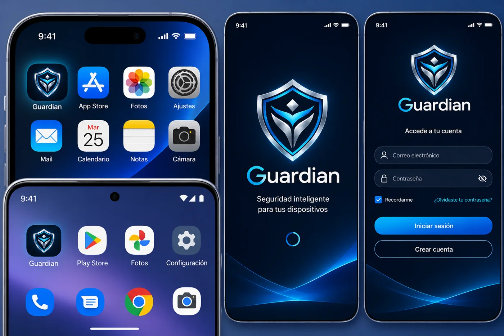

Identidad y accesos
Gestiona tu perfil, verifica tu correo y controla las sesiones activas de tu cuenta.
La seguridad de tus dispositivos, en tus manos. Administra accesos, consulta incidentes y autoriza operaciones desde una sola cuenta Guardian.
Una plataforma de seguridad que pone al propietario en el centro de cada decisión.
Gestiona tu perfil, verifica tu correo y controla las sesiones activas de tu cuenta.
Aprueba solicitudes de acceso vinculadas a tu dispositivo, con verificación biométrica y autorización temporal. En validación móvil.
Consulta los incidentes registrados por tus dispositivos y las notificaciones asociadas a tu cuenta.
Reconocimiento y bloqueo preventivo en Windows, con consentimiento y permisos del propietario. Prototipo en pruebas.
Observaciones autorizadas, con hora y precisión cuando están disponibles. La captura depende de los permisos y del sistema operativo.
Administra dispositivos vinculados, usuarios autorizados y espacios compartidos desde tu cuenta.
Una identidad visual clara y consistente, desde el icono de inicio hasta la pantalla de acceso.

Interfaz compartida para diferentes dispositivos. La protección nativa se habilita según las capacidades de cada sistema.
Agente en evaluación
Cliente en desarrollo
Cliente en desarrollo
Aplicación en validación
Aplicación en validación
Guardian está pensado para equipos propios o expresamente autorizados. Los controles de identidad y las observaciones de seguridad deben respetar los permisos de cada plataforma.
Conoce los principios de privacidad →01 Acceso autenticado
02 Sesiones revocables
03 Evidencias protegidas
04 Consentimiento explícito
La distribución pública y las suscripciones aún no están habilitadas. Los instaladores y enlaces oficiales se publicarán cuando terminen las validaciones correspondientes.
Volver al inicio ↑